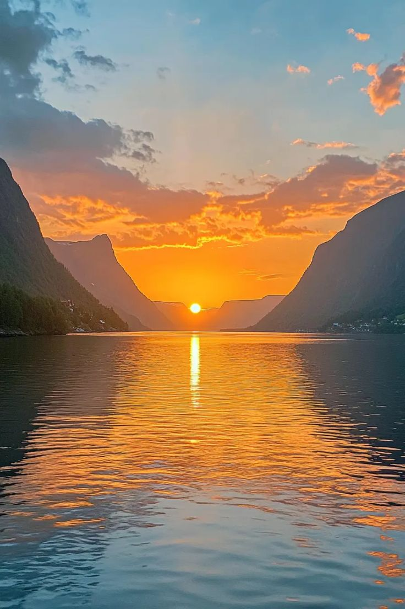
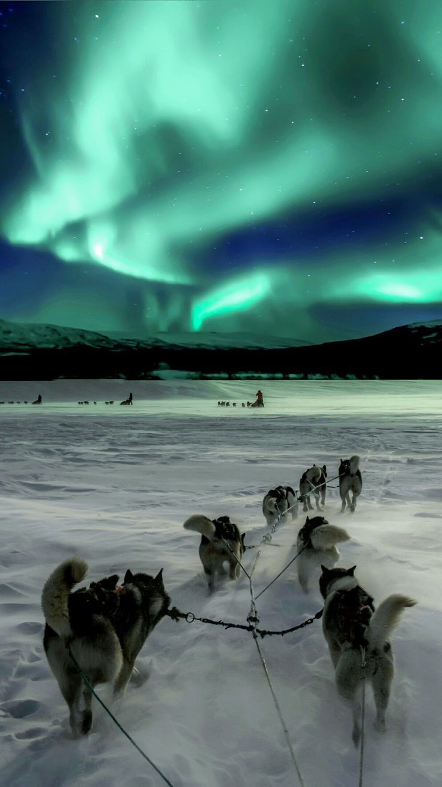
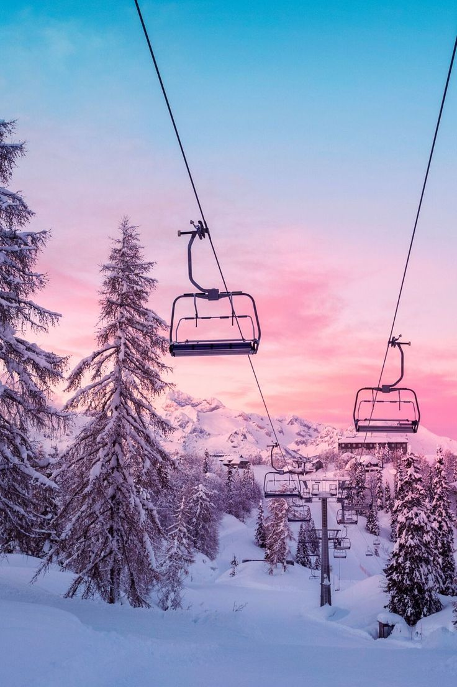

Tu destino Sorpresa en Europa es:
Tromsø, Noruega
click aquí ⇓
Tromsø



Ubicada en el circulo polar ártico, es conocida como la "Puerta de ártico" y es el lugar ideal para disfrutar de la aurora boreal,
un fenómeno natural impresionante.
Además, Tromsø ofrece una mezcla de paisajes montañosos y fiordos expectaculares, junto con actividades como safaris de ballenas y excursiones en trineo.
Esta ciudad no solo es un paríso para los amantes de la naturaleza, sino también para los que buscanuna escapada tranquila y mágica en un entorno único.